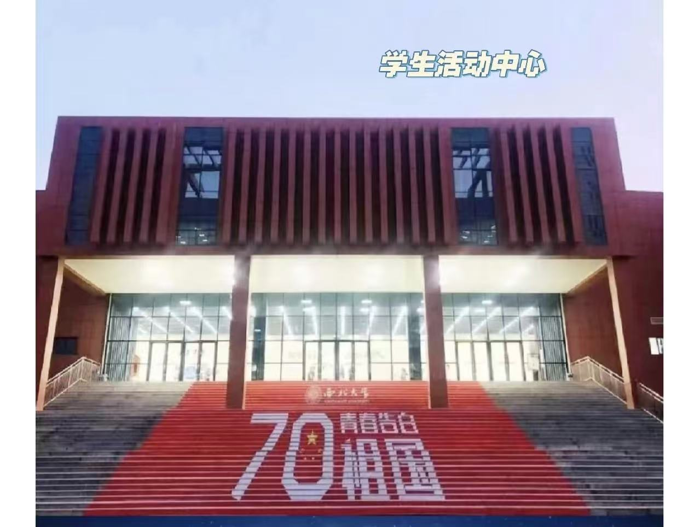

学校简介

西北大学
西北大学始建于1902年，是我国最早创办的现代大学之一，是教育部直属全国重点大学、国家"双一流"建设高校。学校秉承"公诚勤朴"的校训，坚持"传承文明、探究真理、培育英才、繁荣学术、服务社会"的办学宗旨。新闻传播学院作为学校重要院系之一，以培养新时代全媒体人才为己任。
建校历史：122年
在校生数：30,000+
学科门类：12个
校园生活
太白校区
坐落于古都西安，环境优美，是百年学府的人文底蕴与现代化教育的完美融合
图书馆
馆藏丰富，环境宜人，是学习研究的理想场所，藏书超过400万册

大学生活动中心
集文体活动、社团活动、学生服务于一体的综合性场所，是校园文化活动的重要阵地
长安校区
现代化的教学科研基地，配备先进设施，为学生提供优质的学习环境